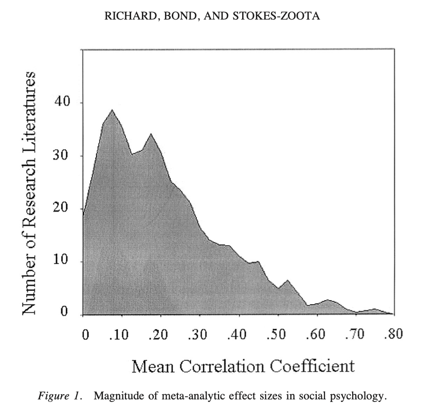
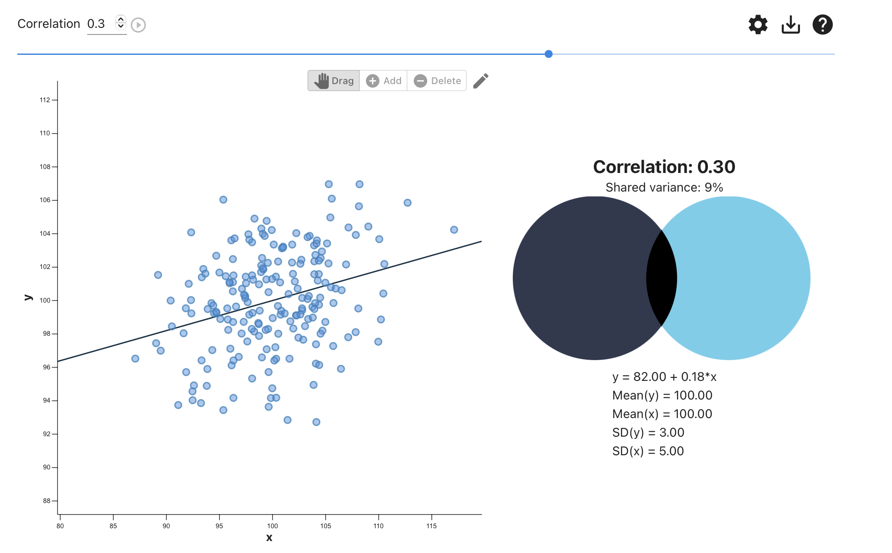
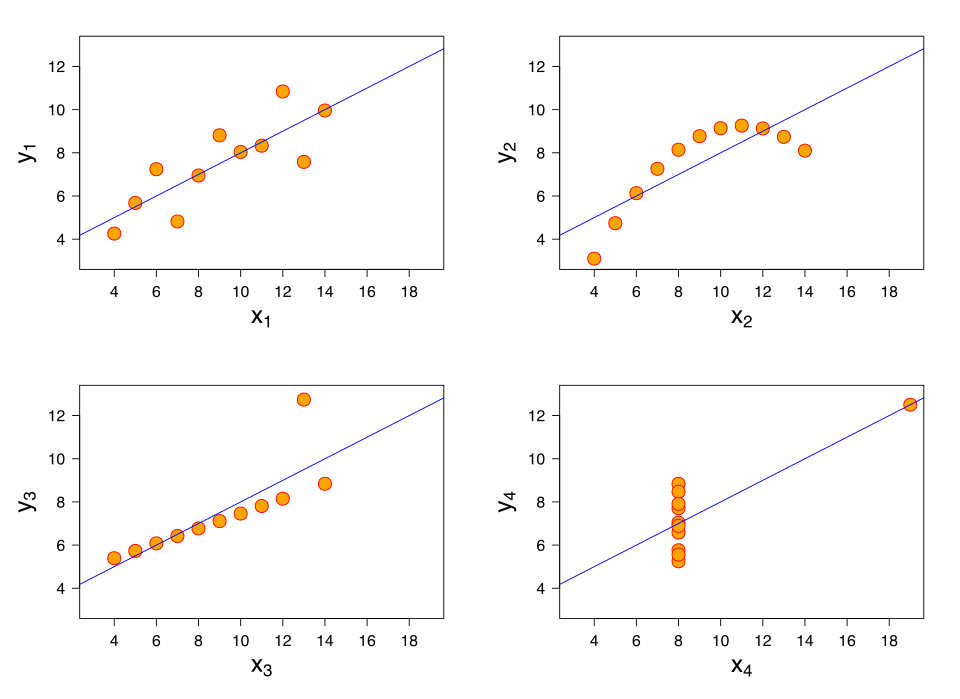
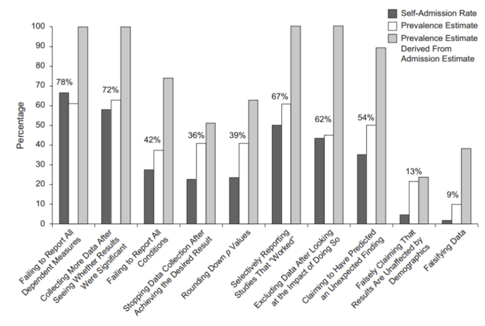
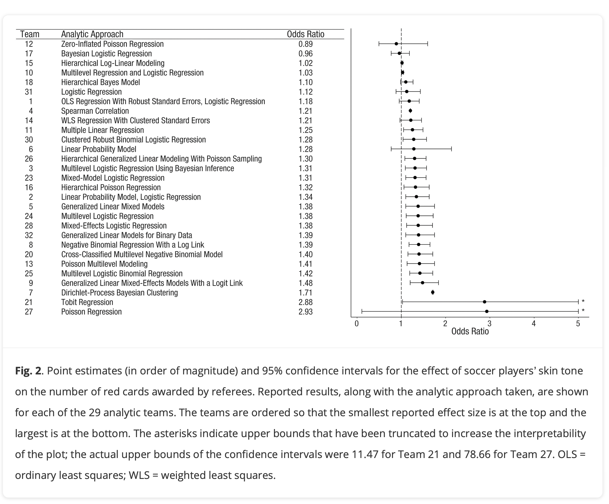

4. Statistical Conclusion Validity
Best estimates that the average correlation between two variables is r < .30

What a r = .3 looks like. [Source]

A “correlation” / slope could look like any of the following graphs [Anscombe’s Quartet]

The Replication Crisis = Hard to Trust Any One Study.

4. Statistical Conclusion Validity
Are we adhering to “best practices” and doing the analyses correctly?
p-hacking : making changes to your model or data in order to “get” your p-values.
model : economic performance ~ political power + error
decide how to operationalize political power
decide how to operationalize economic performance
decide how to adjust your model

Open-Science : be transparent. share code and data; science is a process.
Open Science Foundation (OSF). Hosting data.

be transparent & collaborative; science is a process.

THE END : Farewell!